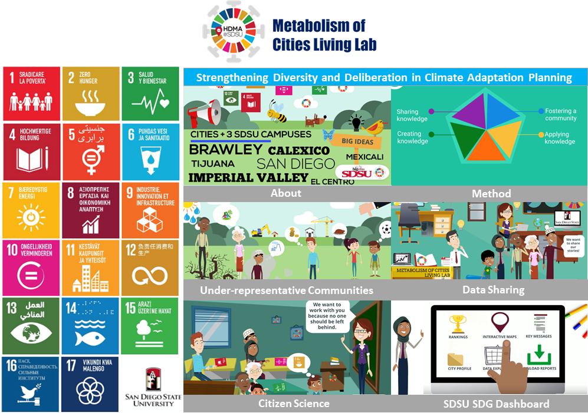
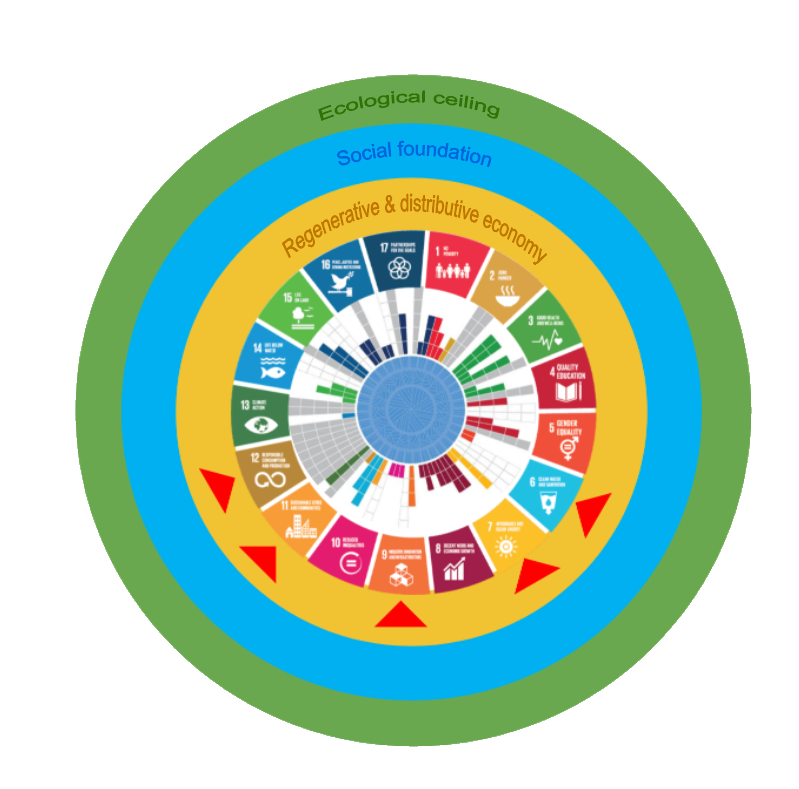
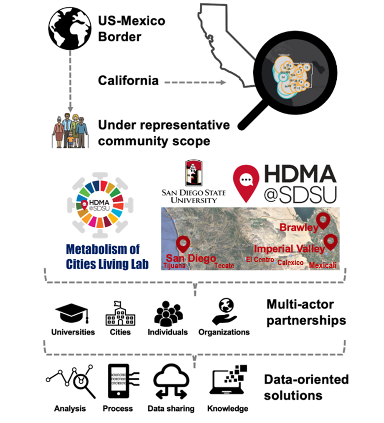

Metabolism of Cities Living Lab
For vulnerable populations in southern California and the Baja California Mexico region, such as children, low-income communities, people with disabilities, migrants, pregnant women, and ethnic minorities, the health effects of climate change related extreme weather events can be especially devastating during times of difficulty such as the Covid-19 pandemic. Such marginalized populations may be more susceptible to disease, have pre-existing health conditions or live in areas that do not promote good health, well-being, access to services/resources, education, technologies, and/or infrastructure. To address these challenges we have established a team of international interdisciplinary professionals from across the world to pioneer new frontiers for better solutions; by establishing the Metabolism of Cities Living Lab (MOC-LLab). At MOC-LLab we allow local governments, citizens, universities, and alike to identify data gaps and the necessary resources to fill those gaps.
Background
Now more than ever, the global response to Covid-19 has revealed the urgency of building inclusive, equitable, and resilient communities to achieve the United Nations Sustainable Development Goals (SDGs) and foster a peaceful and prosperous future. In order to create a sustainable path for humanity, leaders of all ages must heed this call to action and be equipped not only with technical knowledge, but with a deeper understanding of ethical values, sustainable development, global citizenship, and 21st century skills. At MOC-LLAB we bring together leaders from governments, academia, civil society, and business to accelerate the implementation of Education for Sustainable Development in southern California and Baja California, Mexico region. Case studies include the areas of Imperial County, San Diego County, Tecate, Mexicali, and Tijuana, Mexico.
With the selection of 17 SDGs covering 169 targets with 229 indicators, local governments face unprecedented data as coordinators of data producers. It is vital for city professionals to harness new technologies and data sources to provide data to monitor and achieve the SDGs. At MOC-LLAB we have developed a multi criteria SDSU SDG Toolkit to support in meeting the challenges of this rapidly changing environment in light of the SDGs in southern California and the Baja California Mexico region. In particular, the MOC-LLAB aims this tool at cities facing new demands from regional agencies monitoring the SDGs. It emphasizes adaptation of the SDGs to align with each city’s own regional priorities. Furthermore, we aim to accelerate policy and research efforts on Education for Sustainable Development across academia, citizens, local governments, and professional education sectors.

Figure 1. Metabolism of Cities Living Lab
About Us
The MOC-LLab provides a clear assessment of the current state of the environment in southern California, the challenges that we face and how well we have dealt with them, with due consideration given to gender, indigenous knowledge, Covid-19, and cultural dimensions. The assessment lays the foundation for continued socio-environmental assessments across relevant scales, with a thematic as well as an integrated focus, enabling and informing societal transitions and the tracking of Sustainable Development Goal targets as well as previously agreed environmental policies. The MOC-LLab, and collaborative processes, have worked to bridge the gap between science, civic engagement, and policy by turning the best available scientific knowledge into information relevant for decision makers.
As a data science-driven lab, we aim to focus on building collaborative relationships to inspire and foster human scale impact that promotes the well-being of humanity while localizing the Global Goals. By identifying and accelerating breakthrough solutions, ideas, and conversations through the global goals and citizen science. By monitoring and tracking a city’s progress. We offer systemic environmental policies. Through the use of sensors and wearable technologies, to app development, human dynamics, material flow analysis, and tailor based social awareness campaigns.

Figure 2. Metabolism of Cities Living Lab model
Who we are
The MOC-LLab is housed by SDSU’s Center for Human Dynamics in the Mobile Age. Our Goal is to integrate efforts to foster sustainability using a living lab approach by guiding cities. By comparing the city to a living organism we can help cities localize the Global Goals by viewing the city through the lens of urban metabolism.
With our mission of sharing knowledge, creating knowledge, applying knowledge, and fostering a community while including all members of society as a part of the ‘leave no one behind’ UN movement. The MOC- LLAB builds on SDSU's Strategic Plan: "We Rise. We Defy: Transcending Borders, Transforming Lives." Through community-engaged research, technology development, nature-based solutions, and data analytics. By integrating innovative and scalable solutions to help individuals and communities thrive, and by building resilience to withstand future challenges to advance shared prosperity, and help ensure an inclusive recovery. The MOC-LLab has academics, students, citizens, industries, and governmental members from southern California, Mexico, and Europe.

Figure 3. Metabolism of Cities Living Lab description
How we work
In addition to advocating for the achievement of the Global Goals at the city level, our mission is to also curate and create relevant educational resources, push cities for greater investments in quality education, and identify ways to train and support educators, and empower community leaders.
Mission
At MOC-LLab we recognize that in order to achieve the Global Goals. It is crucial for people to acquire this knowledge, values, and skills, enabling communities to better respond to the external challenges while promoting more equitable, inclusive, and resilient societies.
Partnerships